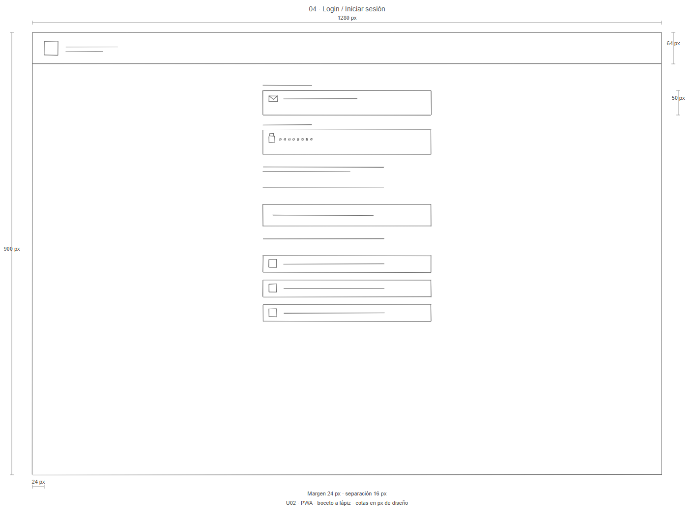

Qué se solicita y dónde está
La guía organiza los quince puntos con referencias a las fuentes, fichas por pantalla y criterios de revisión.
Requisitos e historiasPRÁCTICA 07
Revisa los quince puntos desde una sola carpeta: requisitos, roles, 33 pantallas, recorridos, diagramas y evidencias. Los bocetos originales se consultan en GUI.
La guía organiza los quince puntos con referencias a las fuentes, fichas por pantalla y criterios de revisión.
Requisitos e historias
Nueve vistas generales y 24 adicionales. Cada pantalla enlaza al dibujo original, su ficha y su recorrido.
Abrir galería →
Mapa con imágenes, ocho recorridos guiados, búsqueda, zoom y pestañas con conexiones, reglas y trazabilidad.
Abrir explorador →
Simulación de acceso, recuperación, bloqueo, hábitos, seguimiento y operaciones administrativas en dos formatos.
Recorrer prototipo →| Recurso | Consulta | Qué revisar |
|---|---|---|
| Requisitos | Catálogo | 49 operaciones en diez familias y quince requisitos no funcionales |
| Historias y reglas | Historias · Reglas | Actores, objetivos, aceptación y condiciones del dominio |
| Sketches | GUI móvil · GUI PWA | 66 PNG y 66 SVG, sin copias en esta carpeta |
| Archify | Original y ampliación en el explorador | Original conservado de doce pantallas; especificación ampliada pendiente de ejecución |
| Validación | Resultados y evidencias | Escenarios ejecutados, capturas y límites de las comprobaciones |